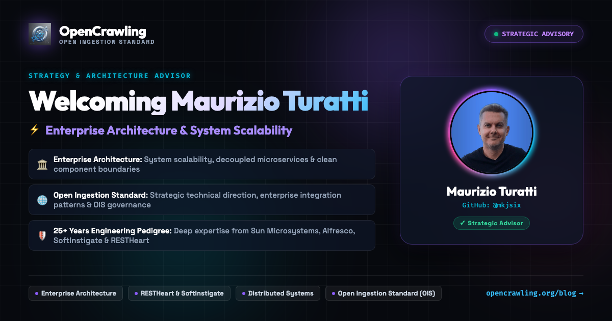

Over the past several months, the OpenCrawling project has evolved from an ambitious open-source vision into an industry-leading data ingestion framework. With dozens of enterprise connectors spanning Alfresco, SharePoint, CMIS, Documentum, FileNet, Doxis, JDBC databases, BPMN engines, StormCrawler web crawling, and Apache Ozone object storage—alongside vector destinations like PgVector, Qdrant, OpenSearch, Solr, Vespa, and Milvus—OpenCrawling is actively powering production Retrieval-Augmented Generation (RAG) and enterprise AI architectures worldwide.
As adoption grows among Fortune 500 enterprises, regulated financial institutions, and government agencies, the demands on our system architecture have expanded exponentially. Solving enterprise data ingestion for AI requires not just writing individual connectors, but maintaining impeccable architectural discipline: decoupled microservices, clean component boundaries, zero-trust security invariants, deterministic lifecycle management, and rock-solid scalability under petabyte workloads.
To ensure OpenCrawling continues to scale with unmatched architectural clarity and strategic foresight, I am thrilled and honored to announce that Maurizio Turatti (@mkjsix) has joined the OpenCrawling project as Strategy & Enterprise Architecture Advisor!
Enterprise Architecture & Strategic Technical Direction
Maurizio brings over 25 years of world-class expertise in distributed systems, enterprise integration, and content platforms to advise OpenCrawling on microservice component boundaries, system scalability, and engineering governance for the Open Ingestion Standard (OIS).
A Quarter-Century of Distributed Systems Pedigree
Maurizio is a distinguished software architect, technology strategist, and serial open-source innovator whose career spans more than 25 years at the bleeding edge of enterprise software:
- Sun Microsystems Heritage: Maurizio was deeply involved in early enterprise distributed computing, core Java platforms, and network architectures during Sun's golden era, instilling a relentless commitment to robust system boundaries and scalable network protocols.
- Enterprise Content Management (ECM) Leadership: As a principal architect and consultant in the Alfresco ecosystem, Maurizio led complex enterprise integration initiatives for large-scale multi-tenant environments, mission-critical document workflows, and high-throughput content repositories.
- Co-Founder of SoftInstigate & Co-Creator of RESTHeart: Maurizio is the co-founder of SoftInstigate and the co-creator of RESTHeart, the renowned open-source REST and GraphQL API engine for MongoDB and Web applications. RESTHeart is celebrated globally for its high-performance, lightweight architecture and powers mission-critical production systems for tier-1 enterprises around the globe.
This rare combination of deep foundational Java systems experience, enterprise content management expertise, and proven track record of creating globally adopted developer-first open-source infrastructure makes Maurizio an extraordinary advisor for OpenCrawling.
Architectural Clarity for the AI Ingestion Era
Ingesting enterprise data for AI is fundamentally different from traditional ETL or search indexing. Organizations face massive document lakes, heterogeneous access control lists (ACLs), proprietary binary formats, asynchronous stream topologies, and complex downstream vectorization pipelines.
Under Maurizio's strategic guidance, OpenCrawling is reinforcing several core architectural pillars:
- Decoupled Microservice Boundaries: Ensuring that our independent crawler services, Apache Kafka message brokers, worker consumers (ingestion, embedding, writer), and Model Context Protocol (MCP) server operate with complete isolation, failure independence, and elastic horizontal scalability.
- Enterprise Integration Patterns: Applying proven enterprise patterns to content claim checks (via Apache Ozone and S3), parallel streaming topologies, and idempotent tombstone deletion across multi-tenant vector stores.
- Governing the Open Ingestion Standard (OIS): Championing the vendor-neutral, spec-first evolution of OIS to ensure seamless interoperability across ECM repositories, relational datastores, document formats, and AI foundation models.
“Enterprise AI initiatives succeed or fail on the quality, security, and freshness of the data feeding them. OpenCrawling and the Open Ingestion Standard represent the exact architectural missing link the industry has been waiting for: a truly vendor-neutral, Zero-Trust bridge between enterprise knowledge silos and modern vector storage. I am excited to collaborate with Piergiorgio and the core team to help shape the strategic architecture, ensure uncompromising system scalability, and build an enduring open standard for the AI generation.”
— Maurizio Turatti, Strategy & Enterprise Architecture Advisor
What Maurizio Will Be Focusing on Next
As Strategy & Enterprise Architecture Advisor, Maurizio is actively engaging with the steering committee and core contributors to guide key strategic initiatives:
- Strategic Technical Direction & OIS Governance: Guiding the long-term roadmap for the Open Ingestion Standard specification, ensuring modularity, clear versioning semantics, and smooth adoption across enterprise platforms.
- Decoupled Ingestion Scalability: Reviewing system architecture, concurrency models, and resource isolation across high-throughput Kafka consumers, distributed worker nodes, and vectorized sink connectors.
- Architectural Discipline & Verification: Establishing rigorous architectural guidelines, test determinism, and production-grade resilience criteria across all core modules and connector implementations.
- Enterprise Adoption & Ecosystem Partnerships: Advising on enterprise deployment patterns, hybrid-cloud integration strategies, and community partnerships across the global open-source ecosystem.
A Note from Piergiorgio Lucidi
“I have had the great privilege of knowing and working with Maurizio across many years in the open-source and enterprise content management worlds. His architectural clarity, deep distributed systems intuition, and pragmatic approach to building rock-solid software have always inspired me. As OpenCrawling expands into enterprise environments requiring bit-for-bit migration, Zero-Trust security, and massive throughput, having Maurizio advise our strategy and architecture is a tremendous milestone. His guidance will ensure that OpenCrawling remains not only the most flexible ingestion framework available, but also the most robust, maintainable, and architecturally sound platform for enterprise AI. Welcome to the team, Maurizio!”
Join Us in Welcoming Maurizio!
You can view Maurizio's profile on our Team Page, follow his work on GitHub (@mkjsix), connect with him on LinkedIn, or say hello in the OpenCrawling Slack Community!